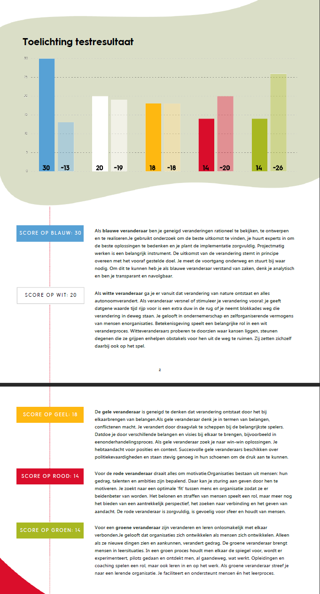

Een ander middel om mijn persoonlijkheid te meten is aan de hand van de kleurentheorie van Caluwé en Vermaak. Onderstaand mijn reflectie op de resultaten van de test.
Zoals te zien is, is de kleur blauw erg prominent in mijn persoonlijkheid. Deze kleur wilt zeggen dat ik doorgedacht ben voor ik ergens aan begin. Ik beoordeel veranderingen rationeel en gedurende de veranderingen ben ik analytisch, transparant en navolgbaar. Ik kan mij hier zeker in vinden. Persoonlijk heb ik vaak graag structuur in mijn werkwijzen en deze bepaal ik voordat ik begin aan een taak. Gedurende mijn studie is deze filosofie zeker sterker geworden omdat wij veel aandacht besteden aan het werken in een PDCA stijl (plan do check act).
De overige kleuren staan vrij gelijk aan elkaar. Hoewel ik mij niet zozeer volledig aan kan sluiten in een van de overige kleuren, zie ik wel overeenkomsten tussen mijn gedrag en de omschrijvingen.
Deze kleurentest moet zo geïnterpreteerd dat iemand niet één kleur is, maar een mix van alle kleuren. Bij mij komt blauw dus wel duidelijk naar voren en heb ik een mix van de overige.